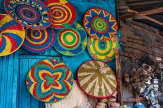
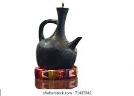
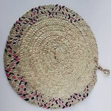
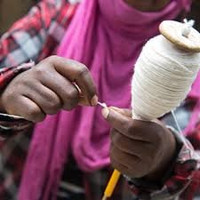
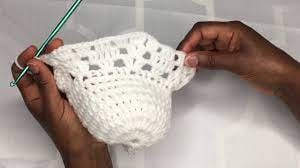

| ወደ ገፁ መጨረሻ | |
|
ኢትዮጵያ ዉስጥ የሚገኙ የእጅ ስራዎች | ||
|  | ለቤት እና ለተለያዩ ቦታዎች ማስዋቢያነት እንጠቀምበታለን። ከክር፣ ከሳርና ከማዳበርያ ሊሰራ ይችላል። | |
|  ከሸክላ አፈር በእጅ የሚሰራ ሲሆን ቡና ለማፍላት እንጠቀምበታለን። |
||
|  | ይሄ ደግሞ ለእንጀራ እና ዳቦ ማውጫነት የሚያገለግል ሲሆን ከሰንበሌጥ የሳር አይነት ይሰራል። |
|
ይሄ ጥጥ በመባል የሚታወቅ ሲሆን ከእጽዋት ይገኛል። ይተለያዩ አላባስትን እንደ ነጠላ፣ ቅሚስ ያሉትን መስራት አያስችለናል። |
||
|  | ዳንቴል በመባል ይታወቃል። የተለያዩ የቤት እቃዎችን ለማልበስ እና ለማስዋብ እንጠቀምበታለን። |